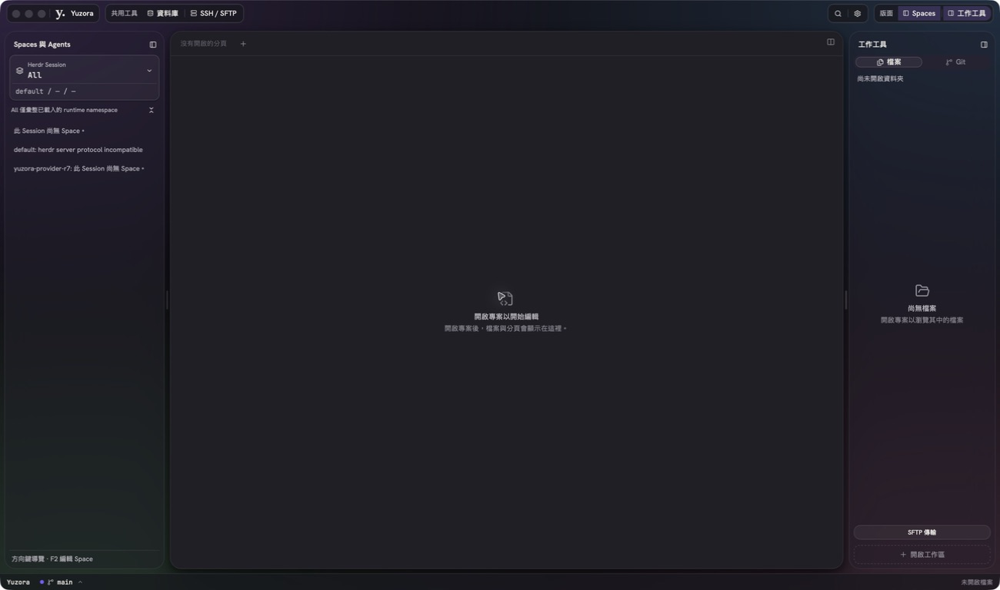
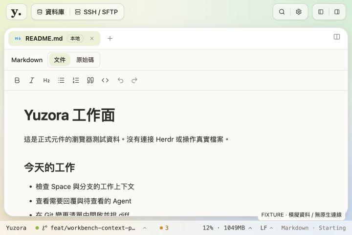

2026-09-08 · Production UI 調整 · macOS arm64
頂欄垂直置中，紅綠燈與 Logo 共用品牌區塊
本次將 center 解讀為頂欄內容的垂直置中。48px 頂欄內的品牌區、共用工具、搜尋設定與版面控制都採 34px 高度，中心線為 y=24px。左右操作入口維持原有位置與功能。
左上角用霧面背景與細分隔線，把「原生紅綠燈｜y. Yuzora」收進同一個區塊。Logo 字級由 27px 調為 24px，並做 1px 光學對齊，讓品牌與視窗控制的比例更接近。一般瀏覽器與非 macOS 環境不顯示原生控制預留區。

實機證據：更新後的 Yuzora UI Test.app。原生控制在 App 非作用中時呈灰色；没有用 HTML 模擬紅綠燈。工具截圖有縮放，不以截圖像素宣稱 logical px。
實作
src/app/AppShell.tsx：品牌區加入僅 macOS Tauri 顯示的原生控制預留空間，使用既有 shadcn Separator；工具群組沿用 ButtonGroup。src/app/workbench/workbench-shell.css：上下 padding 對稱，所有 chrome 群組 34px 高，沿用現有霧面、圓角與 theme tokens。src-tauri/tauri.conf.json：原生 trafficLightPosition 改為 x=22、y=27。Tao 的 y 是 titlebar inset，並非 CSS top；以重建後原生畫面檢查其實際位置。
紅綠燈與品牌的外框屬 App 專用 window chrome，不新增通用 primitive。保留原生按鈕、既有拖曳區與輔助技術名稱。未變更 Herdr/runtime 行為、demo、Git index 或 commits。
驗證結果
| 項目 | 結果 |
|---|
| Typecheck + frontend build | 通過；保留既有 bundle size／dynamic import 警告。 |
| AppShell 與 layout 回歸 | 37 tests 通過。 |
| Lint | 0 errors，56 個既有 warnings。 |
| Native build | cargo build --locked --bin yuzora -j 4 通過，binary 已替換並重啟。 |
| 1440×900／1280×800／1024×768／720×480 | Browser fixture 實測：品牌與三個工具群組皆 top=7、高=34、center=24；無 document 水平溢出。 |
| 原生畫面 | 實際確認紅綠燈、Logo、工具群組在同一水平中心帶，品牌區沒有與側欄或工具重疊。未以本次局部驗收宣告跨平台全功能通過。 |

Fixture：720×480、非原生瀏覽器；原生控制不會以假按鈕出現在此處。
基準 HEAD：711342825480a2edd5eb79005554ce828177e245。保留前序未提交的 UI 遷移和使用者 dirty state。